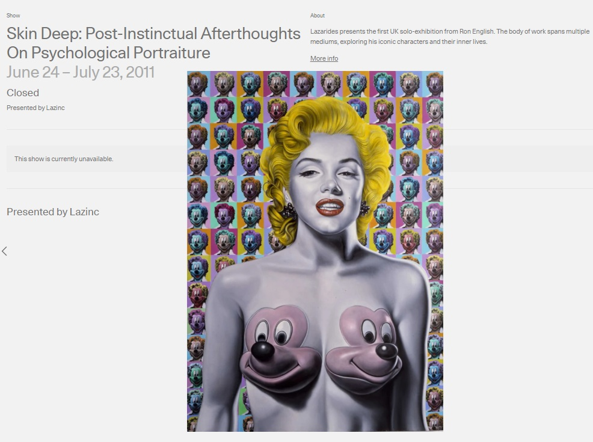
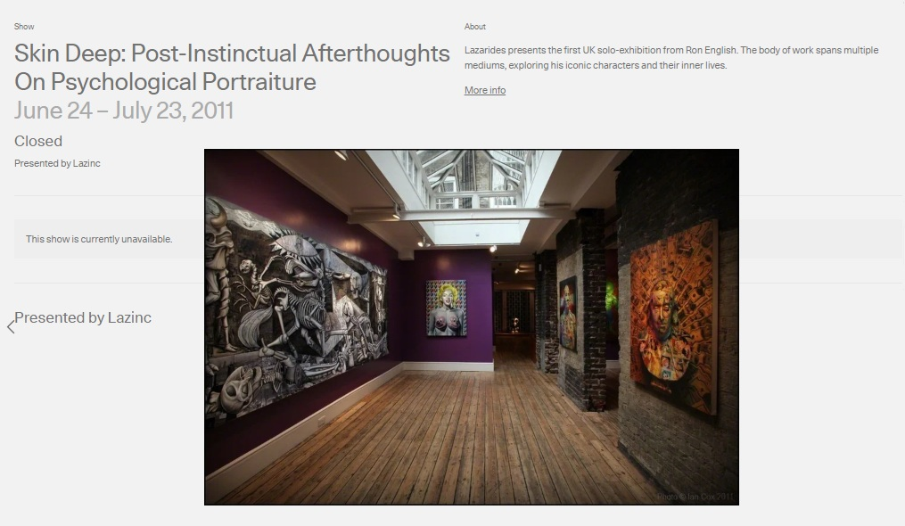
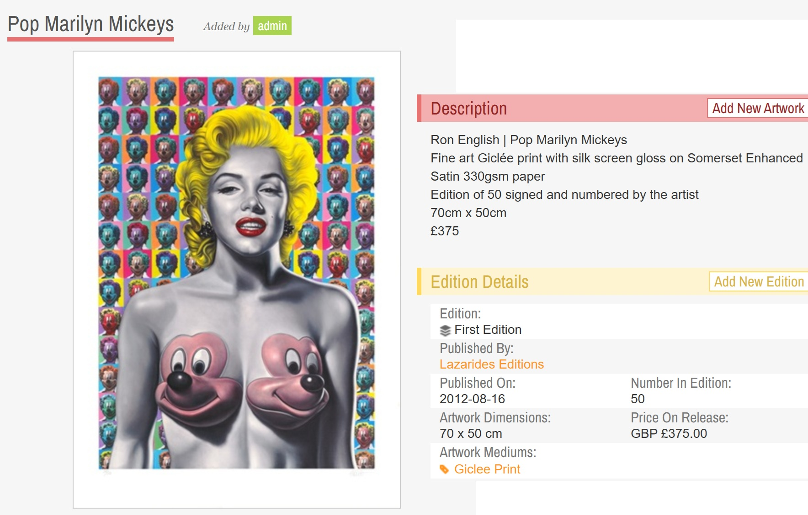
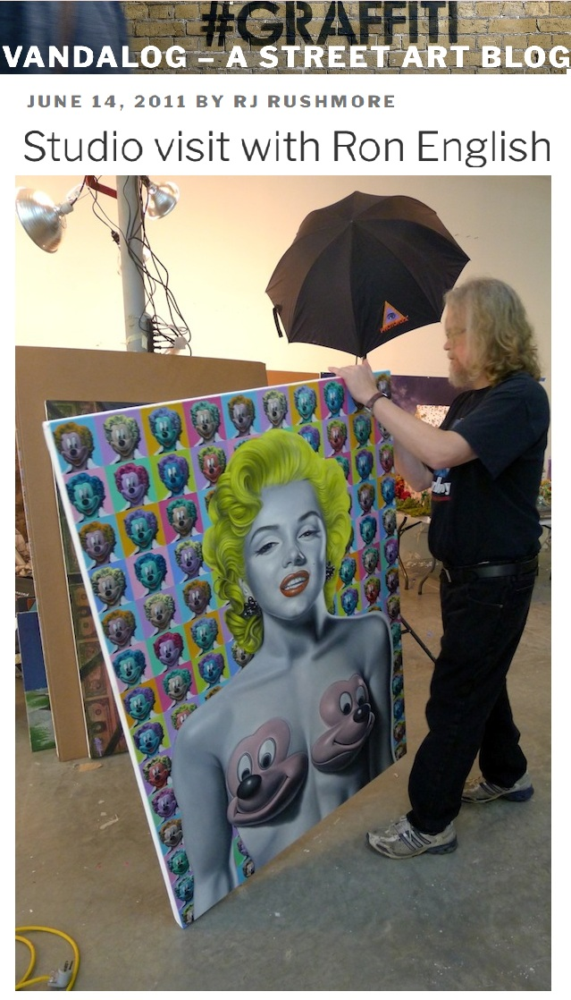
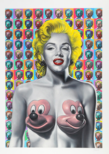

Exhibitions
Skin Deep: Post-Instinctual Afterthoughts on Psychological Portraiture, Lazarides Rathbone, London, United Kingdom, June 24–July 21, 2011.
Literature
Ron English, Death and the Eternal Forever (Korero Press, 2014), p. 158. ISBN 978-0957664920.
Ron English, Status Factory: The Art of Ron English (San Francisco: Last Gasp of San Francisco, 2014), p. 146. ISBN 978-0867197891.
Ron English, Original Grin: The Art of Ron English (Paris: Cernunnos, 2019), p. 300. ISBN 978-2374950938.
Notes
This work appears on Artsy’s show page for Skin Deep: Post-Instinctual Afterthoughts on Psychological Portraiture, presented by Lazinc.
This composition was later adapted by the artist as a related archival pigment print with gloss varnish on Somerset Enhanced Satin 330gsm paper. The Artsy listing describes Pop Marilyn Mickeys as signed and numbered in pencil from an edition of 50, published by Lazarides, with sheet size 70 × 50 cm.
This work references Marilyn Monroe and Mickey Mouse.
The composition was used in advertisement material for the Skin Deep exhibition and also appears in studio photographs published by Vandalog in June 2011.
The work also appears in selected online articles, image posts, and print-related listings.
Ancillary Documentation
The following materials document the work through exhibition pages, related print documentation, public-domain and character-reference material, advertising documentation, and studio photography.







Selected Online Circulation
Selected online documentation related to this work, its source references, related print documentation, and later circulation. This list is not exhaustive.